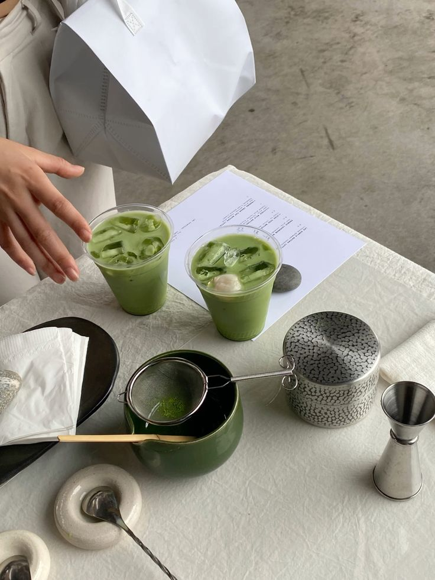

Matcha Latte

Description
Refreshing and mildly sweet!
Ingredients
- 1 tbsp of matcha powder
- 1 tbsp of hot water
- 1 tbsp sweetened condensed milk
- 3/4 cup of milk
- Ice
Steps
-
Combine hot water and matcha powder
in a cup. Mix with a milk frother.
-
Once the mixture is smooth with no
lumps, add the sweetened condensed milk.
-
Add your milk of choice. Mix with a
milk frother till fully combined.
-
Add ice as desired.